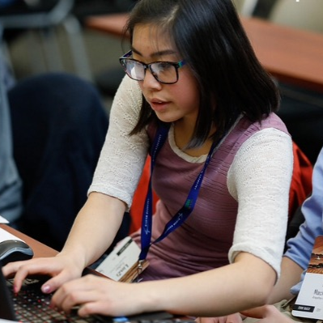

Résumé
My résumé shows experience — not work ethic.
I'm a hands-on learner who thrives on problem-solving and optimizing solutions. Here's the short version — the full PDF is one click away.

Software intern, Lockheed Martin Space.
Experience
Six years of building, leading, shipping.
-
November 2025 – Present
Accuris
Principal Engineering Manager
Running multiple cross-functional engineering teams and partnering closely with architecture and UI teams to ensure we hit key deliverables. Driving alignment between roadmap, technical strategy, and the people doing the work.
-
2025
Mojang
Principal Engineer
Ran the Forest and Warm Oceans biome teams, leading new game development and mentoring developers.
-
2024 – 2025
Returned.com
Engineering Manager · Release Manager · Product Owner
Led internal and outsourced development teams to deliver features on time and at quality. Worked with the CPO, CTO, and CEO to define product roadmaps, scope features, and optimize workflows. As release manager, oversaw 1–3 deployments per week in a fast-paced startup. Owned ticketing, sprint planning, backlog optimization, and CICD pipeline implementation. Managed a team of developers including 3 outsourced engineers, fostering collaboration through pair programming and coaching.
-
2022 – 2023
S&P Global
Scrum Master
Scrum Master across three development teams shipping high-quality mobile applications for top-tier clients including BMO, Wells Fargo, Goldman Sachs, and RBC Wealth Management. Used Scrum and Agile to remove roadblocks, empower developers, and ensure successful delivery. Role eliminated in 2023 due to company restructuring.
-
2018 – 2021
Lockheed Martin Space
Software Engineer Intern → Software Tech 1
Started on the Pulsar AR/VR team building immersive applications for corporate partners. Led the creation of a satellite tracking system integrating AI, machine learning, and Unity for real-time data visualization. Transitioned into a Technical Project Management role leading the college internship team to develop an AR rover prototype for next-generation lunar missions. Collaborated with the Pulsar Development team on flight software simulations.
Education
Always learning — formal and otherwise.
-
January – July 2022
University of Denver
Technical Project Management Bootcamp
18-week professional program in Technical Project Management, Risk and Stakeholder Management. Areas of focus: Software Project Management, Agile, Scrum, DevOps, Waterfall.
-
2019 – 2021
University of Colorado Boulder
Computer Science & Mandarin Chinese
Specialties: Neural Networks, ML, AI, AR/VR, Video Game Design, Computational Complexity, Automated Systems.
Skills · 6+ years
I can speak fluent engineer and fluent stakeholder.
Engineering Leadership
- Jira
- Confluence
- Figma
- Kanban
- Scrum
- Agile
- Stakeholder mgmt
- Release mgmt
- Scope & risk
- Sprint cadences
- Backlog mgmt
- Bug mitigation
- Pair coding
- Empathy / soft skills
Front-End / Back-End
- TypeScript
- React
- JavaScript
- HTML
- CSS
- Node.js
- AngularJS
- Dart
- Flutter
- Docker
- DynamoDB
- Lambdas
- APIs
- OAuth
- CICD
- C#
- C++
- Kotlin
- Swift
- Step Functions
Recent adventures